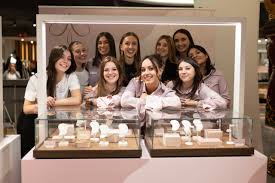

I primi passi di Amabile
“L’idea è nata a novembre 2019. Ero passata da Biotecnologie a Marketing e Organizzazione d’impresa, ricordo che stavo in università ma non ero comunque contenta”. Perché? “Volevo fare qualcosa di mio, volevo essere un’imprenditrice, creare prodotti miei e usare i social per farli conoscere e venderli”.
Decisamente ci è riuscita, ma non è stato facile, che è una cosa che è bene ribadire soprattutto per chi pensa che all’epoca dei social sia tutto semplice: “Non ho avuto praticamente supporto dalla mia famiglia, che anzi è stata parecchio respingente su questa cosa. Però, il fatto di vivere con loro, in una cameretta dove lo spazio era limitato, mi ha in qualche modo spinta nella direzione giusta”. In che senso? “Non avevo posto per grandi cose e i gioielli, che sono piccoli di natura, sono stati una scelta ovvia”.
E così, appunto “dopo avere racimolato 300 euro come potevo”, Martina è partita. I social fanno parte della sua storia: “Non avevo né i soldi né il posto per potermi permettere uno stock di prodotti, dunque facevo fare un singolo gioiello da un fornitore, lo fotografavo, postavo l’immagine su Instagram e aspettavo che qualcuno facesse un ordine e decidesse di acquistarlo. A quel punto avvertivo il cliente che sarebbero servite 2 settimane di attesa e con i soldi della vendita mi facevo fare il gioiello da spedire”. Funzionava? “Sì e no: vendevo soprattutto alle amiche e ad altre persone di Modena, ma era una cosa molto piccola e molto local”, che è andata avanti più o meno sino maggio 2020, con in mezzo il primo lockdown da coronavirus e quei mesi in cui non si poteva fare nulla, produrre nulla, spedire nulla. Erano però anche i mesi dell’esplosione di TikTok in Italia.
Da Martina ad Amabile, la svolta grazie a TikTok
In quel periodo Martina ha deciso di affiancare al profilo su Instagram quello su TikTok: “Raccontavo momenti ironici della mia vita, sempre con indosso i miei gioielli. E se qualcuno mi chiedeva informazioni sulla loro provenienza, li indirizzavo sul sito di Amabile”.
Questa volta funziona sul serio: “TikTok è stata davvero la chiave di tutto, per la viralità che dà e i numeri che permette di fare in tempi brevi. La popolarità è cresciuta tanto sino al settembre del 2021, ma non potevo più fare tutto da sola”. E quindi “ho assunto la mia prima dipendente (che ancora oggi è la sua social media manager, ndr) e abbiamo iniziato a realizzare contenuti specifici per i gioielli”. Oggi i dipendenti sono una quarantina, tutte donne tranne uno ma “non è stata una scelta. È che di curriculum di uomini ce ne arrivano pochissimi, e ovviamente possiamo solo assumere chi si fa avanti”. Non è stata una scelta, però è comunque un bel messaggio di rivincita femminile: “Sì, lo è. Anche perché siamo tutte giovani, fra i 20 e i 30 anni, e penso di avere creato un bell’ambiente di lavoro, fresco e dinamico”.
E la famiglia? “Credo abbiano capito di avere sbagliato e che all’inizio avevo bisogno di un aiuto che mi è mancato, anche se non lo ammetteranno mai. Però ora mi stanno sostenendo molto e in fondo un po’ comprendo il loro scetticismo: per i primi due anni sono stati increduli, ma anche io ero incredula di fronte a quello che stava succedendo. Perché i social sono volatili e c’è sempre il timore che tutto finisca di colpo”.
La donna giusta al momento giusto
Per Martina però le cose decisamente non sembrano finite, e lei stessa si è domandata il perché e anche ha provato a darsi qualche spiegazione. “Penso di avere fatto le mosse giuste al momento giusto: scaricare TikTok a maggio 2020 e pubblicare i contenuti che ho pubblicato, proprio nel momento in cui le persone avevano bisogno di leggerezza e frivolezza dopo il primo lockdown”. Ancora: “Mostrare l’azienda come è, un posto di lavoro diverso, le persone che ci sono dentro, la quotidianità di quello che facciamo, dare ai clienti la sensazione di crescere insieme con loro, davanti ai loro occhi”. Oggi Martina e Amabile hanno complessivamente circa 1 milione di follower su Instagram e oltre 1,5 milioni su TikTok, dove velocità e programmazione sono la chiave di tutto: “Sui social devi essere anche molto spontaneo e cogliere l’attimo, soprattutto su TikTok, dove i trend magari nascono e muoiono in un paio di giorni. Se c’è una canzone che funziona, devi postare con quella canzone in quel momento, anche se magari non l’avevi preventivato”. Martina realizza alcuni contenuti così, in autonomia, e altri li calendarizza, li pensa e li realizza insieme con la sua sua social media manager, che è un po’ il suo braccio destro.

Fatturato:
| 2020 | 2021 | 2022 | 2023 |
|---|---|---|---|
| 65.000 euro | 350.000 euro | 4 milioni euro | 10 milioni euro (previsione) |